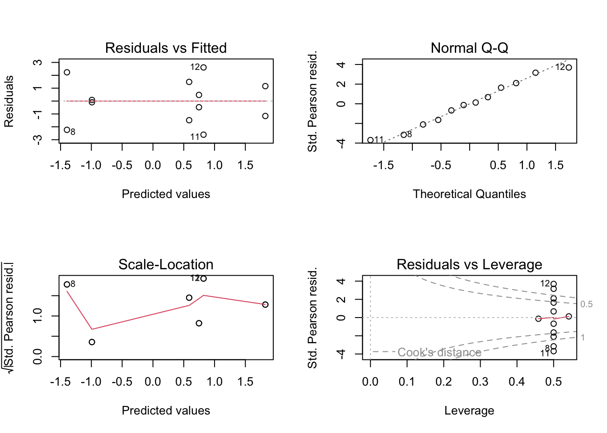

rpn_bleach <- read.csv('rpn_bleach_2015.csv') %>%
as_tibble() %>%
mutate_at(vars(location, depth, transect, group, status), factor)Percent Cover and Bleaching in 2015
rpn_summary <- rpn_bleach %>%
group_by(location, depth, transect, group) %>%
dplyr::summarise(total_count = n())`summarise()` has grouped output by 'location', 'depth', 'transect'. You can
override using the `.groups` argument.rpn_PLOB <- rpn_bleach %>%
filter(group == "PLOB") %>%
group_by(location, depth, transect) %>%
dplyr::summarise(total_count = n())`summarise()` has grouped output by 'location', 'depth'. You can override using
the `.groups` argument.rpn_plob <- read.csv('rpn_cover.csv') %>%
as_tibble() %>%
filter(group == "PLOB") %>%
mutate_at(vars(location, depth, transect, group), factor) %>%
mutate(
cover = total_count/total_points,
failures = total_points - total_count
)Porites
Generalized linear model
plob.glm <- glm(cbind(total_count, failures) ~ location * depth,
family = binomial(link = "logit"),
data = rpn_plob)par(mfrow = c(2, 2))
plot(plob.glm)
summary(plob.glm)
Call:
glm(formula = cbind(total_count, failures) ~ location * depth,
family = binomial(link = "logit"), data = rpn_plob)
Deviance Residuals:
Min 1Q Median 3Q Max
-2.54165 -1.20892 -0.00388 1.28236 2.71923
Coefficients:
Estimate Std. Error z value Pr(>|z|)
(Intercept) 1.8245 0.1822 10.017 < 2e-16 ***
locationse -2.8154 0.2352 -11.973 < 2e-16 ***
locationwest -1.2368 0.2246 -5.506 3.68e-08 ***
depthsh -1.0773 0.2267 -4.753 2.00e-06 ***
locationse:depthsh 0.6719 0.3138 2.142 0.0322 *
locationwest:depthsh 1.3105 0.2956 4.434 9.25e-06 ***
---
Signif. codes: 0 '***' 0.001 '**' 0.01 '*' 0.05 '.' 0.1 ' ' 1
(Dispersion parameter for binomial family taken to be 1)
Null deviance: 396.020 on 11 degrees of freedom
Residual deviance: 31.694 on 6 degrees of freedom
AIC: 102.95
Number of Fisher Scoring iterations: 4rpn_poci <- read.csv('rpn_cover.csv') %>%
as_tibble() %>%
filter(group == "POCI") %>%
mutate_at(vars(location, depth, transect, group), factor) %>%
mutate(
cover = total_count/total_points,
failures = total_points - total_count
)poci.glm <- glm(cbind(total_count, failures) ~ location * depth,
family = binomial(link = "logit"),
data = rpn_poci)par(mfrow = c(2, 2))
plot(poci.glm)
summary(poci.glm)
Call:
glm(formula = cbind(total_count, failures) ~ location * depth,
family = binomial(link = "logit"), data = rpn_poci)
Deviance Residuals:
Min 1Q Median 3Q Max
-1.34438 -0.96059 -0.00078 0.72479 1.34520
Coefficients:
Estimate Std. Error z value Pr(>|z|)
(Intercept) -3.2958 0.3395 -9.709 < 2e-16 ***
locationse 3.3046 0.3643 9.072 < 2e-16 ***
locationwest 1.1756 0.3959 2.970 0.00298 **
depthsh -2.2296 1.0579 -2.108 0.03507 *
locationse:depthsh 2.3640 1.0736 2.202 0.02767 *
locationwest:depthsh 2.4573 1.0934 2.247 0.02462 *
---
Signif. codes: 0 '***' 0.001 '**' 0.01 '*' 0.05 '.' 0.1 ' ' 1
(Dispersion parameter for binomial family taken to be 1)
Null deviance: 436.578 on 11 degrees of freedom
Residual deviance: 10.347 on 6 degrees of freedom
AIC: 69.293
Number of Fisher Scoring iterations: 5Anova function from the car package
Anova(poci.glm, type = "III") # Type III because...Analysis of Deviance Table (Type III tests)
Response: cbind(total_count, failures)
LR Chisq Df Pr(>Chisq)
location 178.902 2 < 2.2e-16 ***
depth 7.491 1 0.006201 **
location:depth 8.513 2 0.014171 *
---
Signif. codes: 0 '***' 0.001 '**' 0.01 '*' 0.05 '.' 0.1 ' ' 1